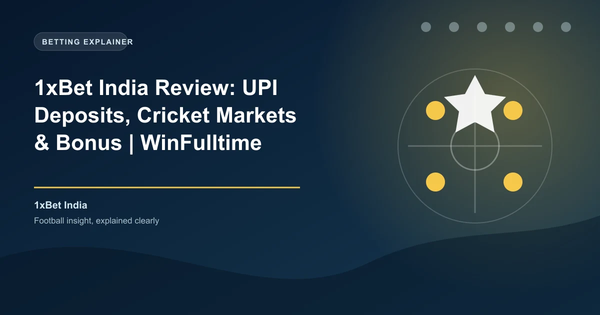

India is the world's largest untapped sports betting market, with an estimated 370 million cricket fans and over 140 million active online bettors according to Statista. Despite the enormous demand, India has no federal framework to license and regulate online sports betting. 1xBet has capitalized on this gap by operating offshore under a Curaçao license while offering UPI deposits, Hindi language support, and cricket-focused betting markets. This review covers what Indian bettors need to know — including the legal grey area.
The legal status of online betting in India is complex and falls into a grey area. India does not have a specific federal law that explicitly prohibits online sports betting at the individual level. The primary gambling legislation is the Public Gambling Act of 1867, which was written long before the internet existed and primarily targets physical gambling houses.
The legal position is further complicated by India's federal structure. Under the Constitution of India, gambling is a state subject, meaning individual states can regulate or prohibit gambling within their borders. Several states have enacted their own legislation, with some like Sikkim and Nagaland creating licensing frameworks for online games, while others like Telangana and Andhra Pradesh have banned online betting entirely.
India's 2025 Online Gaming Bill introduced further regulatory developments, though its primary focus was on regulating online gaming (including fantasy sports and skill-based games) rather than explicitly addressing sports betting. The bill established provisions for a regulatory body to oversee online gaming platforms, but offshore operators like 1xBet remain in a grey area since they are not incorporated in India and do not hold Indian licenses.
For Indian bettors, this means that while using 1xBet is not explicitly illegal at the individual level (as there is no federal prohibition on placing bets online), the platform operates without Indian regulatory oversight. There is no Indian regulatory body that can intervene in disputes between Indian bettors and 1xBet. This is a critical distinction compared to licensed operators in markets like Nigeria or Kenya.
Online betting laws in India are evolving. While no federal law explicitly prohibits individual bettors from using offshore platforms, some states (including Telangana, Andhra Pradesh, and Tamil Nadu) have enacted legislation that may criminalize online betting. Indian bettors should understand their specific state laws before using any offshore betting platform. 1xBet does not hold an Indian license and is not regulated by any Indian gambling authority.
1xBet India offers new players a 120% first deposit bonus up to ?33,000, with higher tiers available for larger deposits. The bonus structure is designed to appeal to both casual bettors and high-volume cricket punters.
| Detail | Value |
|---|---|
| Welcome Bonus | 120% first deposit bonus |
| Maximum Bonus | ?33,000 (standard) / up to ?66,000 (higher tiers) |
| Minimum Deposit | ?300 (UPI) / ?200 (other methods) |
| Wagering Requirement | 5x in accumulator bets |
| Minimum Odds per Leg | 1.40 |
| Minimum Selections | 3 per accumulator |
| Validity Period | 30 days from registration |
To claim the bonus, register a new 1xBet India account, select the sports welcome bonus, and deposit at least ?300 via UPI or ?200 via other methods. The bonus is credited instantly and must be wagered through accumulator bets with at least three selections at minimum odds of 1.40 per leg.
The higher bonus tiers (up to ?66,000) are available for larger deposits and may require a bonus code during registration. Indian bettors should check the current bonus terms on the 1xBet India website, as the exact offer structure can change during major cricket events like the IPL.
Beyond the welcome offer, 1xBet India runs cricket-specific promotions during the IPL season, including free bet offers, accumulator boosts tied to IPL matches, and cashback promotions on losing cricket bets. The platform also offers regular promotions for other sports including football, tennis, and kabaddi.
1xBet India supports the payment methods Indian bettors use daily. The integration with UPI (Unified Payments Interface) makes deposits seamless, as UPI is the dominant digital payment method in India with over 300 million active users according to the National Payments Corporation of India (NPCI).
The ?300 minimum UPI deposit makes 1xBet accessible to casual bettors, while the support for NetBanking and IMPS accommodates those who prefer traditional banking. Cryptocurrency support is particularly valuable for Indian bettors, as it provides an alternative when UPI or bank transfers face delays or restrictions.
1xBet India processes withdrawals through UPI and bank transfers, with a minimum withdrawal of ?550 via UPI. Here are the available methods:
| Method | Minimum Withdrawal | Processing Time |
|---|---|---|
| UPI | ?550 | 15 minutes – 24 hours |
| NetBanking | ?550 | 1-24 hours |
| IMPS | ?550 | 15 minutes |
| Skrill / Neteller | ?550 | 15 minutes |
| Cryptocurrency | ?550 (equivalent) | 15 minutes |
1xBet charges no internal withdrawal fees. UPI withdrawals are processed within 15 minutes in most cases, though larger withdrawals may take up to 24 hours. KYC verification is required before the first withdrawal and involves submitting a government-issued ID (Aadhaar card, PAN card, passport, or voter's ID) and proof of address.
India's tax laws require a 30% tax on net winnings from online betting under Section 115BBJ of the Income Tax Act. Additionally, a 1% TDS (Tax Deducted at Source) is applied on the total deposit amount at the time of deposit under Section 194BA. Indian bettors should be aware of these tax obligations and maintain records of their betting activity for tax filing purposes. The Income Tax Department of India has been increasingly focused on taxing online gaming and betting winnings.
Cricket is the primary focus of 1xBet's Indian operation, and the platform delivers exceptional depth in cricket markets. With 100+ markets per match in major tournaments, Indian bettors have extensive options for wagering on their favorite sport.
The Indian Premier League (IPL) is the crown jewel of cricket betting in India. 1xBet offers 100+ markets per IPL match, including match winner, top batsman, top bowler, total sixes, total fours, player of the match, powerplay score, over/under totals, and ball-by-ball betting. The platform also provides IPL-specific promotions and enhanced odds during the tournament season.
The live betting section at 1xBet India is extensive, with thousands of live events available daily. Cricket live betting is particularly popular, with ball-by-ball markets available for IPL and international matches. The live interface provides real-time score updates, statistical overlays, and dynamic odds.
1xBet offers live streaming on select events for registered users with a positive account balance. While not every match is streamed, the coverage includes thousands of events monthly across cricket, football, tennis, and basketball. The cash-out feature is available on both pre-match and live bets, allowing Indian bettors to secure profits before events conclude.
1xBet offers a dedicated mobile app for Android devices, available as a direct APK download from the 1xBet India website. Google Play does not permit real-money gambling apps in India, so Android users must enable "Install from Unknown Sources" in their device settings. The iOS app may be available on the Apple App Store in some regions.
The mobile app provides full access to all betting markets, live streaming, cash-out, UPI deposits and withdrawals, and account management. According to Statista, mobile betting accounts for over 70% of all online wagers in India, making app performance critical for the Indian market.
The app supports Hindi language, biometric login, and works efficiently on both WiFi and mobile data connections. It is optimized for the range of Android devices commonly used in India, from budget phones to flagships.
1xBet offers competitive odds across cricket markets. The platform's cricket odds are particularly sharp for IPL matches, where the high betting volume allows for tighter margins. Independent odds comparisons show that 1xBet's cricket margins are competitive with other offshore operators serving the Indian market.
The platform supports decimal odds (standard in India), fractional, and American formats. Enhanced odds on selected IPL matches and international cricket fixtures are offered regularly, providing additional value for cricket bettors.
1xBet India provides 24/7 customer support through multiple channels:
Support is available in English, Hindi, Bengali, and several other Indian languages. According to Trustpilot, 1xBet's customer support ratings vary, with positive reviews highlighting cricket market knowledge and negative reviews focusing on withdrawal verification delays.
1xBet provides responsible gambling tools including deposit limits, session time limits, self-exclusion, and reality checks. However, as an offshore Curaçao-licensed operator with no Indian license, 1xBet is not subject to Indian responsible gambling regulations. There is no national self-exclusion registry in India comparable to the UK's GamStop.
Indian bettors should take extra personal responsibility for managing their gambling activity. The ease of UPI deposits, while convenient, can also make it easier to deposit impulsively. Setting deposit limits from the start is strongly recommended.
Registration on 1xBet India is straightforward and takes under two minutes:
You must be at least 18 years old (the minimum gambling age in most Indian states) and complete KYC verification before your first withdrawal. KYC requires a government-issued ID (Aadhaar card, PAN card, passport, or voter's ID) and proof of address.
1xBet offers a compelling product for Indian bettors who are comfortable with the offshore licensing arrangement. The UPI deposit integration, Hindi language support, and deep cricket market coverage make it one of the most India-friendly offshore platforms available. The 120% welcome bonus up to ?33,000 and kabaddi markets add further appeal.
The primary concern is the legal grey area. India's gambling laws are evolving, and 1xBet holds no Indian license. Indian bettors should understand the regulatory landscape in their specific state and accept the limitations of using an offshore platform. For cricket enthusiasts who want comprehensive market coverage and convenient Indian payment methods, 1xBet delivers strong value — with the caveat that regulatory protections are limited.
Ready to bet? Check our free daily cricket predictions for value bets across the IPL, international tests, and T20 leagues.